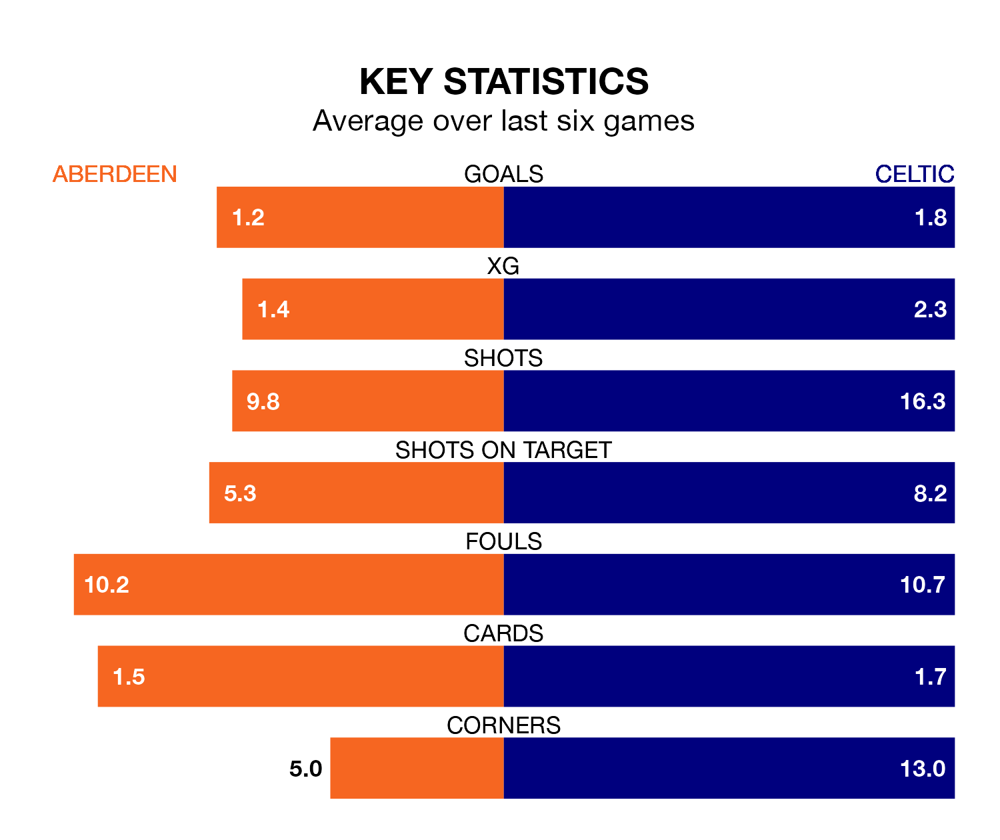

Celtic are strong favourites to take all three points despite Aberdeen's home advantage in Saturday lunchtime's match at the Pittodrie Stadium.
*Betting Company* are offering odds of 1.36 on Celtic sealing the win, with the visitors sitting first in Premiership table.
Aberdeen, who are eighth in the league and 33 points behind the Bhoys, are priced at 6.58 to win. A draw is set at 4.35.
With 54 goals in 23 games so far this season, Celtic are the league's highest scorers with 2.3 goals per game. And they are conceding fewer than average, letting in 15 goals at a rate of 0.7 per game.
Aberdeen, meanwhile, are below average scorers, with 1.1 goals per game, compared to a league average of 1.3. They have conceded 1.6 goals per game.
In Bojan Miovski, the hosts have one of the league's most on-form strikers so far this season. He has notched 11 goals in 21 appearances, to sit second in the scoring charts.
His goal rate of one every 163 minutes is quicker than that of Matthew O'Riley, the Bhoys's top scorer with a goal every 193 minutes, and a total of 10 goals in 22 games.
In the last 10 years, Aberdeen and Celtic have played each other on 41 occasions. Aberdeen won four of them, Celtic 34, and they drew three times.
On average, Aberdeen scored 0.7 goals and the Bhoys 2.3 in those matches.
Their last meeting was on November 12, when Celtic won 6-0 at home.
Aberdeen are in mixed form in Premiership, with two wins and two draws from their last six games.
With five wins and one loss over that period, the away team's form is much better – they have taken 15 points from 18, compared to Aberdeen's eight.
Aberdeen's last match was on Tuesday, a 1-1 draw against Dundee, with Miovski getting the goal for Aberdeen.
Celtic beat Ross County 1-0 last time out, on Saturday, with Alistair Johnston on the scoresheet.
Saturday's match will be refereed by Steven McLean, who has taken charge of six Premiership games so far this season, issuing one red card and booking 22 players. He has awarded five penalties.
The last Aberdeen game McLean refereed was a 3-1 away win against Rangers on September 30. His last Celtic match was their 1-1 draw at home against Motherwell on November 25.
Updated: 15:45 (UTC), 02/02/24